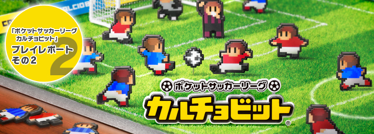
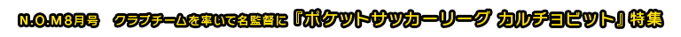
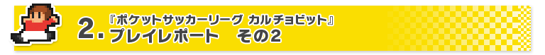
いくら戦術で補うことができると言っても、選手たちの能力が低いままでは、リーグ戦やカップ戦で優勝することはできません。筆者のチームも、はじめの数戦はどんな戦術を試してもボコボコにされてしまい、なかなか引き分けにすら持ち込めませんでした。
しかし、負ければ負けるほど「課題」が見つかり、選手も育っていきます。1年目のリーグ戦はまったくダメでも、2年目からは必ずいい勝負ができるようになってきます。とにかく1年目は公式戦がないときも練習試合を毎週組んで、「課題」をたくさん手に入れると良いようです。
「特訓」は各選手、1週に1度しか行えません。1選手に3つまで、「課題」を与えて特訓することができるのですが、1つよりは2つ、2つよりは3つと、できるだけ多くの「課題」を与えたほうが、一気に能力が上がります。ただし、課題をするとその内容に応じて疲労もしてしまうので、過密日程のときなどは注意が必要です。
課題の組み合わせ次第では特別な効果を生む「スペシャルメニュー」が発動します。一度発見した「スペシャルメニュー」は、次に同じ組み合わせを選ぶとキラキラしたマークが出てそれとわかるようになっています。すでに発見したものを覚えていれば、選手の長所を一気に伸ばしたり、弱点をしっかり補ったりも可能です。HOMEボタンを押して、ニンテンドー3DS本体機能の「ゲームメモ」でメモっておくのも便利ですね。
ちなみに試合には、公式戦・親善試合・練習試合の3つの種類があります。このうち練習試合だけは、負けても支持率が下がって監督が解雇されてしまう（ゲームオーバー）心配がありません。勝敗を気にすることなく、「課題」カードを集められるのです。
ただし、同じ選手に毎週のように休みなく練習試合や「特訓」を課していると、体調を崩してしまいます。体調は青・黄・赤のシグナルでわかります。筆者のチームでは、大事な公式戦の直前に攻撃のレギュラー選手3人がケガをしてしまい、「特訓」どころか試合にも出せなくなって大変なことになりました。オーバーワークは禁物なのです。
毎週コツコツ「課題」をもとに特訓するか、ある程度ためてから「スペシャルメニュー」を狙って特訓するかは、選手の疲労度や日程をみながら決めていきましょう。
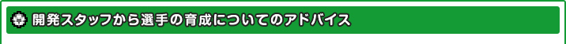
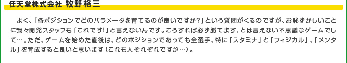
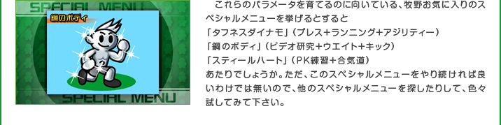

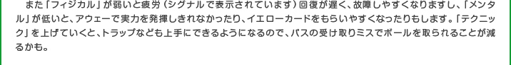

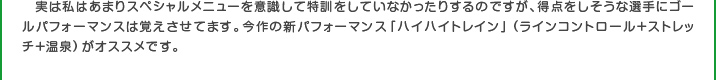
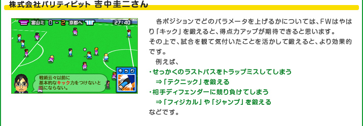


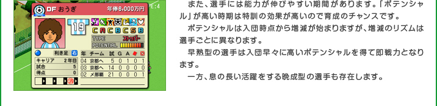
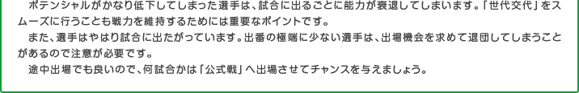